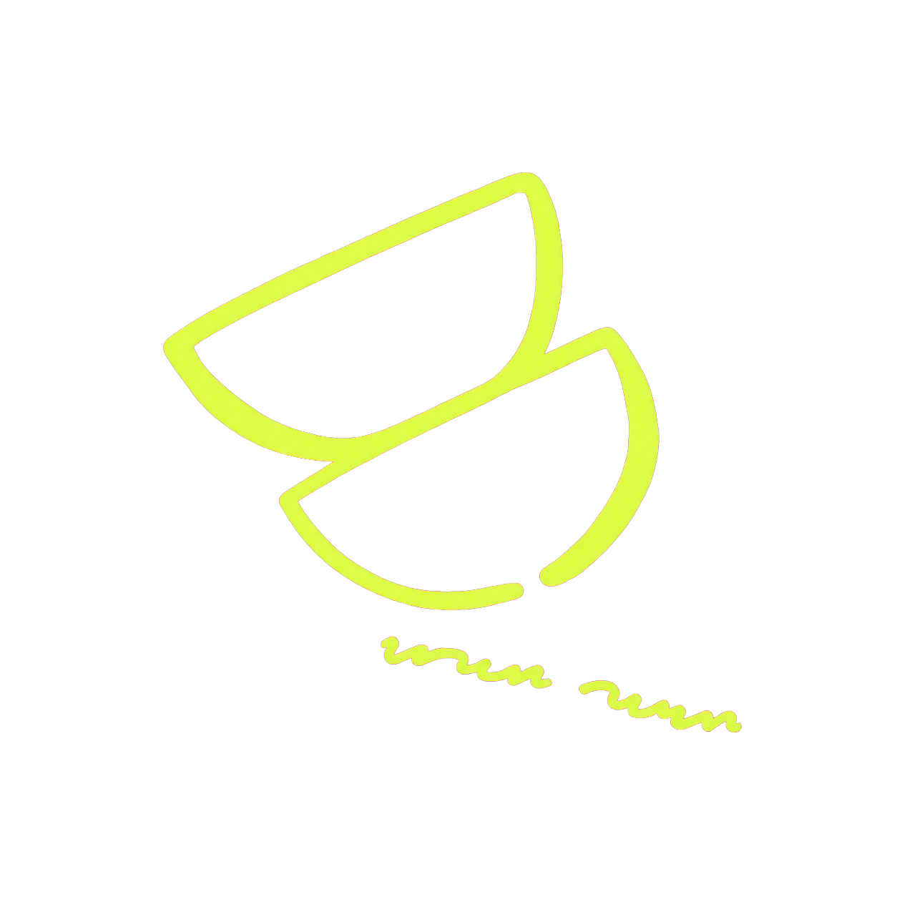
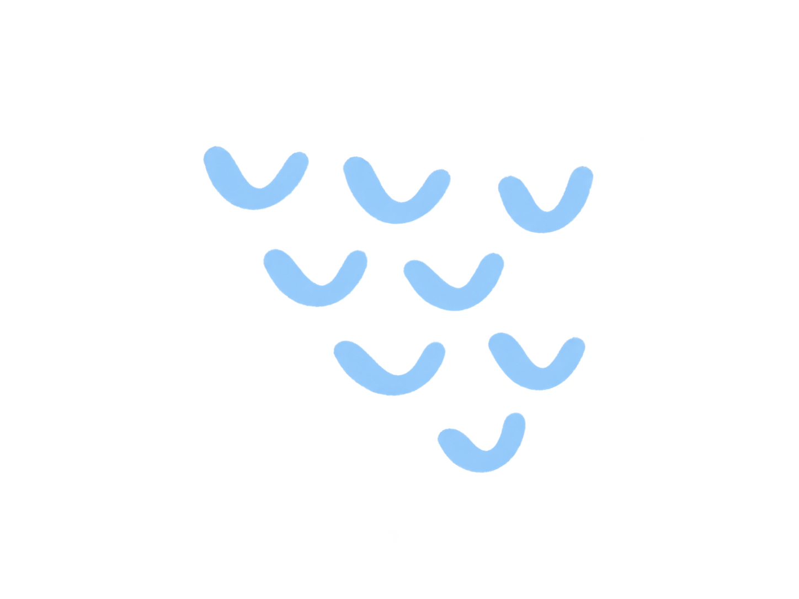
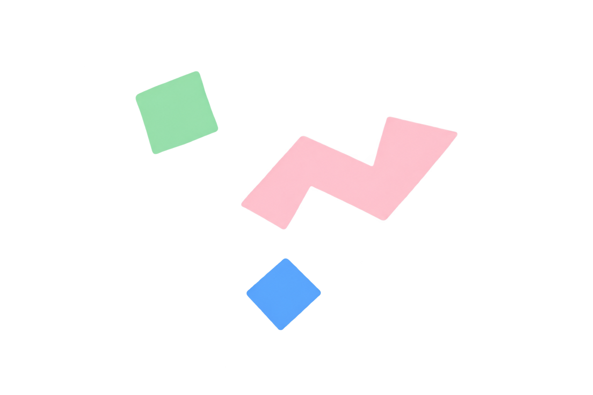
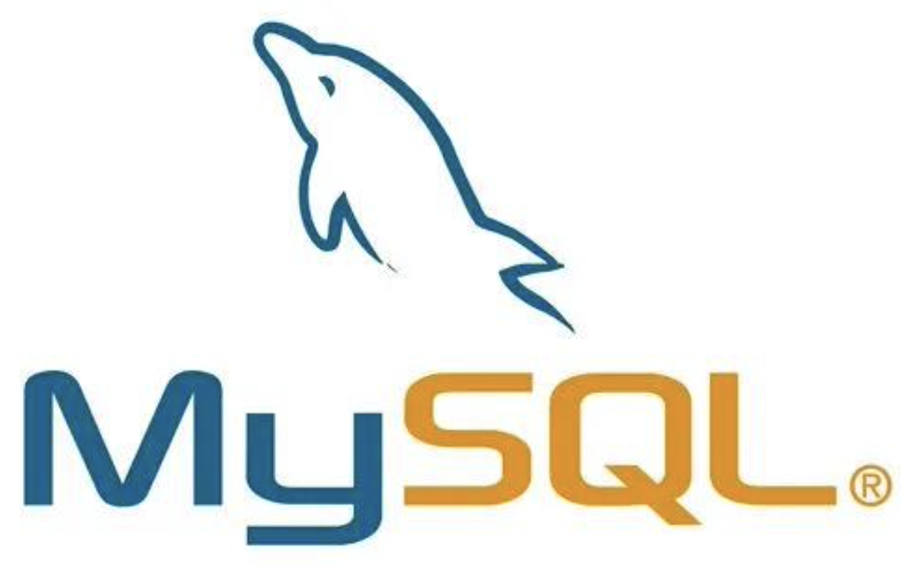
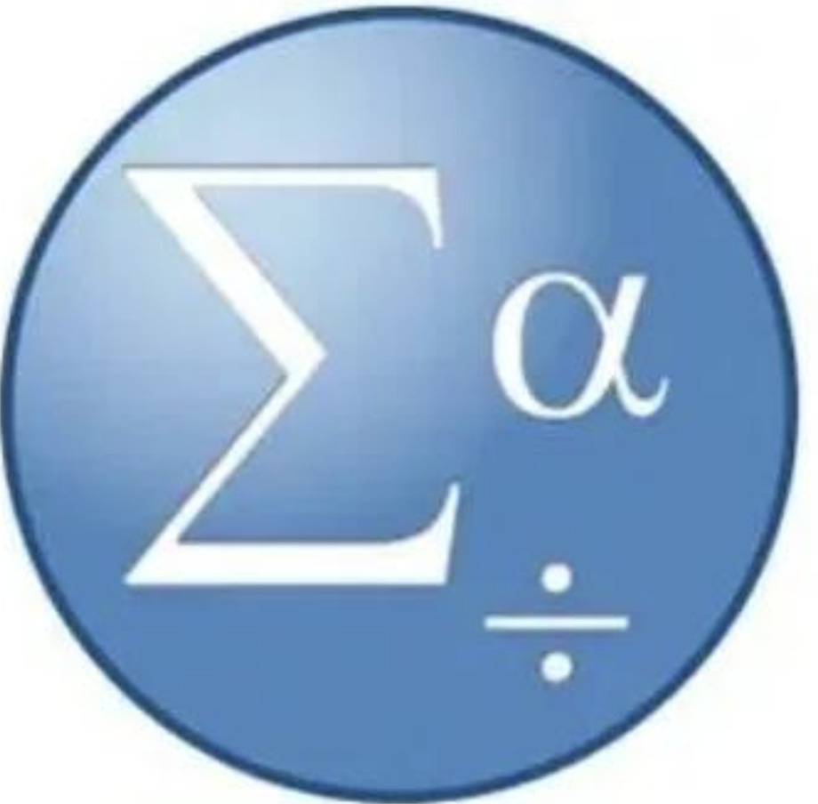
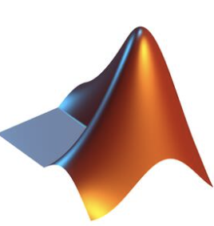
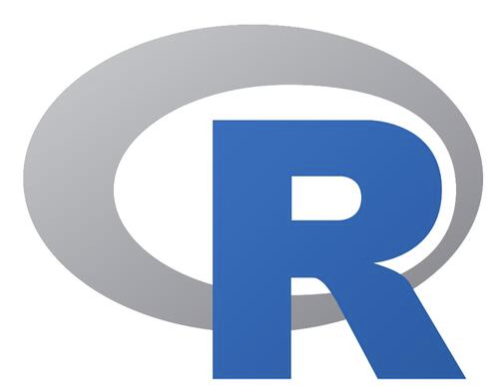
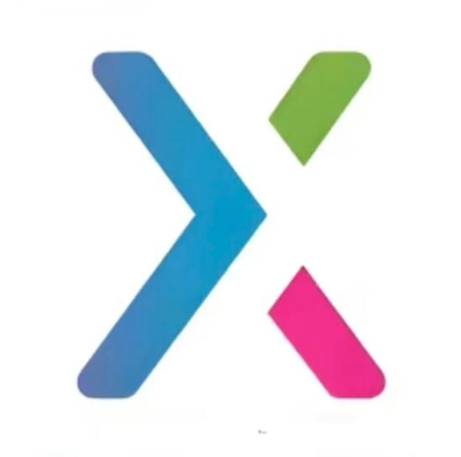
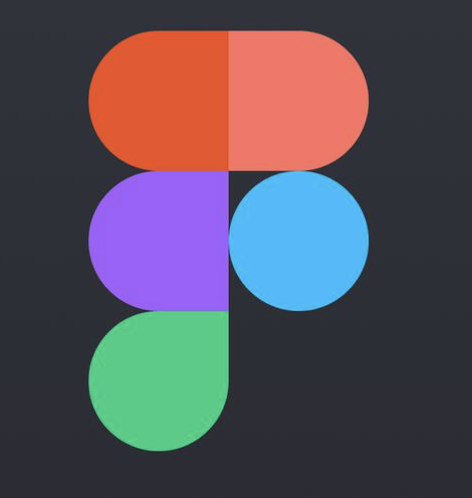
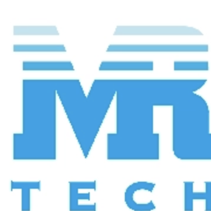

EDUCATION / 教育背景
2023.09 — 2026.06
杭州师范大学硕士
应用心理学
应用心理学
2019.09 - 2023.06
杭州师范大学钱江学院本科
护理学
护理学



下载简历01 / 关于我
Hi，
我是沈泽萍
一名正在探索 AI 产品方向的产品经理
擅长从用户需求出发分析问题，并将需求转化为可落地的产品方案。
拥有 B 端产品从 0 到 1 的实践经验，能独立完成用户调研、需求分析、产品设计及项目推进工作。
持续学习AI 产品相关知识并积极实践，探索 AI 在产品场景中的应用。
EDUCATION / 教育背景
SKILLS / 技能

SQL
SPSS
Matlab
R语言
Axure
Figma02 / 实习经历
2025.07–2025.12

每日互动股份有限公司产品实习生
2024.07–2024.09
市场调研实习生
2025.07–2025.12
产品实习生
2024.07–2024.09
市场调研实习生
03 / AI探索与学习